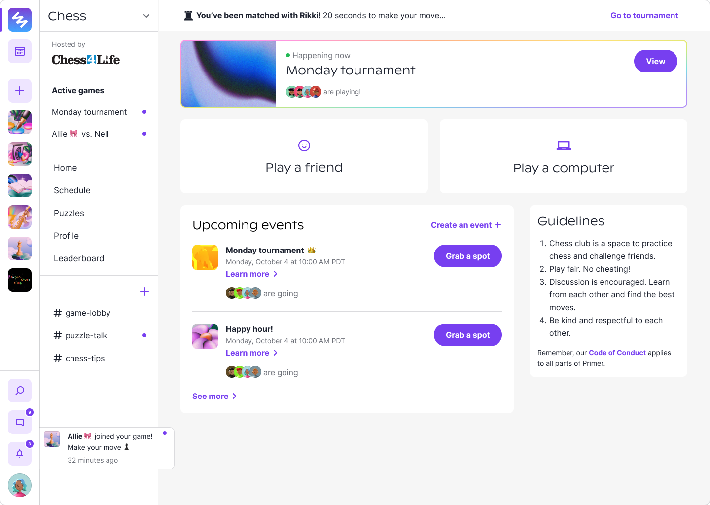

Primer was originally a space for kids to pursue their passions through clubs.
Kids could join various interest-based clubs on our platform like Naturalists and Gamers.
We started exploring 3rd-party led clubs and found Chess4Life.
We partnered with them to create a Chess Club on Primer.
Problem
Many of the most popular chess platforms aren’t kid-friendly.
For example, Lichess is one of the best chess platforms, but they don’t have spaces for kids to discuss and play with each other. The internet can be a scary place!
Chess4Life got around it by creating accounts for every kid in their classes and putting them on “kid-mode” that limited all chat and social features on Lichess.
This isn’t an ideal solution and not as exciting for kids to interact with. But Primer was well-positioned to tackle this problem as an online space only for kids.
Many of the most popular chess platforms aren’t kid-friendly...But Primer was well-positioned to tackle this problem as an online space only for kids.
Chess.com's kid platform. I can't speak to the effectiveness, but it didn't seem to take kids seriously (Primer's motto).
Lichess had a kid mode where you couldn't chat for safety reasons,
but according to the forums I read, most kids were not on kid mode as there were no age restrictions to sign up.
Design
I’m not a chess player so I learned a lot of chess design from Lichess and Chess.com.
I started playing more and solving puzzles to figure out what’s intuitive and what’s not.
It was a pretty fun way to learn about the problems, but also very hard! Chess is not an easy game…
In phase 1, I designed the basic features of a chess platform: playing a friend and computer, chess profile, and chess tournaments.
From the home page, you can play the computer or invite a friend to play you.
You can review your games and stats on your profile.
This is what the tournaments were like! You were auto-matched after each game unless you paused.
So, what did I design that was different from Lichess?
What did I have to consider from the kid platform lens? There are two things!
1. Integrating chess with Primer's features
Primer already had social features like rooms, channels, and profiles for kids.
I wanted to see how chess could live in those systems.
Kids could now play chess in a room, while chatting with their opponent!
Spectators could also join to watch games. Lichess could never.
Playing chess in rooms unlocked live audio and chat.
2. A club for all levels: beginners to experts
I wanted Chess club to be for all levels.
The future ideal state was to create guides with Chess4Life for kids to learn chess in the club as well.
The team was only able to get to a little onboarding before the club closed,
but I hoped to use this onboarding survey to understand what kind of content to create.
A quick onboarding flow with a few questions to gauge your level and interest.
Testing
I tested tournaments a few times with the Chess4Life classes.
It went smoothly! Kids enjoyed the ability to chat (maybe a little too much) and explored rooms.
And then, I started weekly tournaments with Chess4Life and Primer kids, with prizes!
Our first winners below :~)
Kids enjoyed the ability to chat freely (maybe a little too much) and slowly explored rooms.
You can't see the photo here, but Liam sent us the cutest photo with his prize (a chess set!).
Iterations
I noticed a few problems:
Kids had trouble finding someone to play with outside of tournaments
Kids often navigated away from games and lost track of it
Need to figure out how to differentiate ourselves from established platforms like Lichess and Chess.com
Some ideas I designed to solve said problems:
Correspondence chess
You have a much longer time to make a move so if you leave your computer, it's no problem.
Better notification system

Tournament notifications at the top within Chess club and active game notifications globally on the side bar.
Leveraging rooms for unique chess experiences
Puzzle racer is a classic game, but in a room, it would be so much more exciting!
Unfortunately, we didn't get to these as Chess club came to a close :(
Learnings & reflection
We stopped our partnership with Chess4Life after a few months as we felt that the opportunity was hard to grow for our team at the moment.
I invested a lot into this club and felt like it had potential. Chess is one of those activities that's engaging, for all ages, and builds
critical thinking skills – all great for our kid community! I also believed a third-party partnership was advantageous for our team.
Outsourcing the expertise and content of a club was genius (and it also making the club more legit for kids).
I fought for Chess club to stay open, but at the end of the day, microschools became our priority. We ended up shutting down all of our clubs.
I fought for it to stay open, but at the end of the day, microschools became our priority. We ended up shutting down all of our clubs.
Anywho, learning chess was really fun. I was able to empathize on a deeper level as I played chess,
experiencing firsthand the best and worst parts of online chess.
It's a good sign when most of the features you design are features you want to use.
I also unlocked a new skill: designing 3D chess pieces on Illustrator.
I felt so powerful?